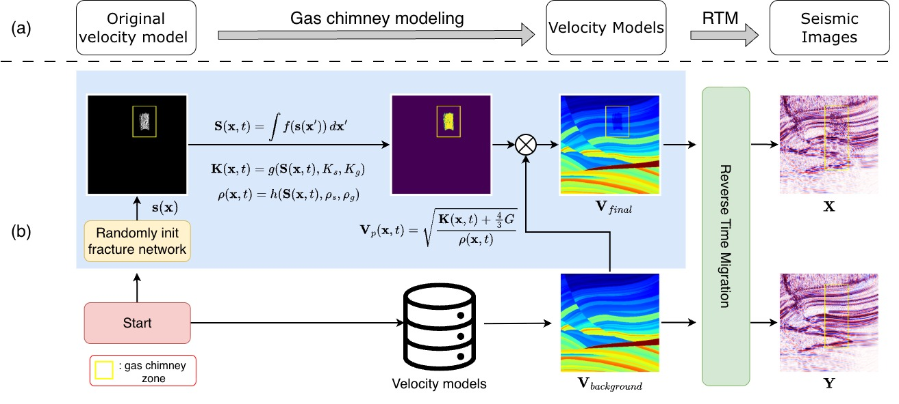

Biography
Hi, I am Bao. I am AI Resident at FPT Software AI Center focusing on Computer Vision, under the guidance of Assoc. Prof. Anh Nguyen.
Previously, I worked as an AI Engineer at VinBigData and as a Research Assistant at IPSAL, under the supervision of Assoc. Prof. Thi-Thao Tran and Assoc. Prof. Van-Truong Pham.
Research Interests
Computer Vision, Multimodal Learning and Robotics.
|

|
SIGMA: A Physics-Based Benchmark for Gas Chimney Understanding in Seismic Images
Bao Truong, Quang Nguyen, Baoru Huang, Jinpei Han, Van Nguyen, Ngan Le, Minh-Tan Pham, Doan Duy Hien, Anh Nguyen
CVPR, 2026
|
|
|
1S-MambaMatch: A Semi-Supervised and One-Shot Learning Framework with Multi-Input Visual State Space Model for Skin Lesion Segmentation
Viet-Thanh Nguyen, Gia-Bao Truong, Van-Truong Pham, Thi-Thao Tran
Biomedical Signal Processing and Control, 2026
paper
|
|
|
Dense Attention Mamba-based Network with Adaptive Sigmoid Fowlkes-Mallows Loss for Enhanced Medical Image Segmentation
Van Quang Nguyen, Thi-Thao Tran, Gia-Bao Truong, Nhu-Linh Than, Van-Truong Pham
Image and Vision Computing, 2025
paper
|
|
|
SC-MambaFew: Few-Shot Learning based on Mamba and Selective Spatial-Channel Attention for Bearing Fault Diagnosis
Gia-Bao Truong, Thi-Thao Tran, Nhu-Linh Than, Van Quang Nguyen, Thi-Hue Nguyen, Van-Truong Pham
Computers and Electrical Engineering, 2024
paper
|
|
|
MixMamba-Fewshot: Mamba and Attention Mixer-based Method with Few-Shot Learning for Bearing Fault Diagnosis
Nhu-Linh Than, Van Quang Nguyen, Gia-Bao Truong, Van-Truong Pham, Thi-Thao Tran
Applied Intelligence, 2025
paper
|
Honors & Awards
- First Prize in Scientific Research Student Award, 42nd HUST Annual Student Research Conference, 2025
|
{kind=link}